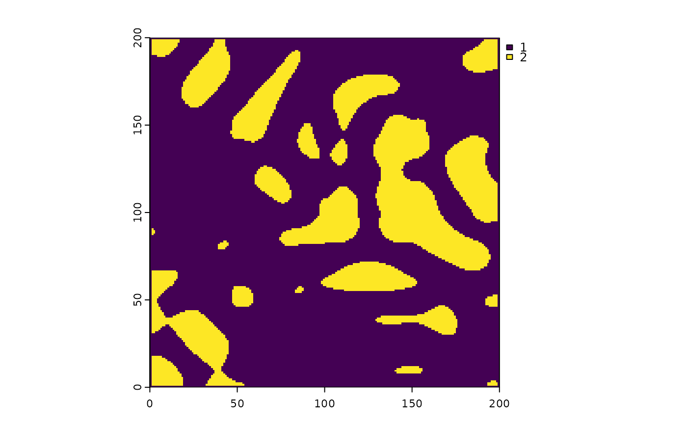

generate_perlin_noise.RdA perlin noise based potential space map generator
generate_perlin_noise(
width,
height,
cellSize,
frequency,
octaves,
lacunarity,
categorized,
cat_method,
lim = 0,
percetange = 0
)width of output raster
height of output raster
cellsize of output raster
perlin frequency
perlin octave
parlin lacunarity
TRUE/FLASE tells you if the slope raster returns categorized or smooth
either by slope_lim or land_percentage
the slope degree cutoff for portential space where 1 will be potential space and 2 non potential space
test<-generate_perlin_noise(200,200,1,2,3,0.01,TRUE, "land_percentage", percetange = 75)
raster::plot(test)
